Wybierz kraj, o kótrego potrawach chcesz się dowiedzieć:
Potrawy angielskie:
Fish and Chips
Znana wszystkim ryba z frytkami, potrawa popularna zwłaszcza w regionach nadbrzeżnych, ale znana i kochana w całej Anglii. W Anglii całość jest skrapiana octem słodowym i dodawana jest szczypta soli. Popularność zyskała w połowie XIX wieku przez spadek ceny ryb spowodowany rozwojem rybołóstwa i transportu kolejowego na wyspach brytyjskich. Tradycyjnie fish and chips podawane jest na wynos, oryginalnie zawijane w gazetę.
Ciekawostka: w slangu, określenie "the chippie" oznacza bar lub sklep podający właśnie fish and chips.
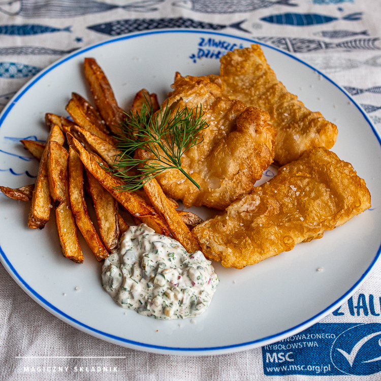
Banger and Mash
Kiełbasa (bangers) z tłuczonymi ziemniakami (mash), często w połączeniu z grochem i sosem gravy. Kiełbasa może być wieprzowam, wołowa lub jagnięca. Bardzo popularne danie w całym kraju, najczęściej serwowane w pubach. Danie to, nawet gdy przyrządzone w domu, jest przykładem typowego "pub grub", czyli prostego dania, które można przyrządzić szybko i w dużych ilościach.
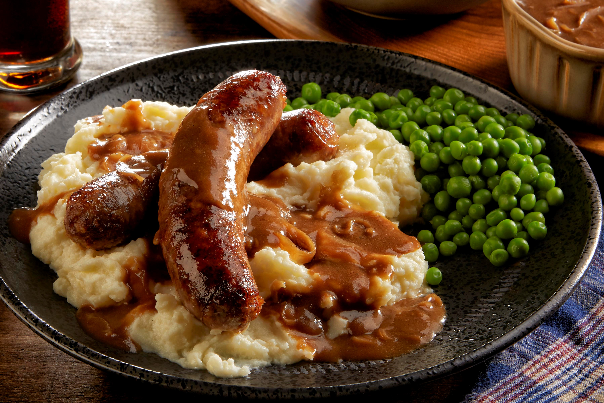
Pełne brytyjskie śniadanie
Pakiet śniadaniowy składający się z bekonu, kiełbas, jajek, tostów, grochu, grzybów, pomidorów i placków ziemniaczanych. Potocznie nazywany "full English", ma też swoje odpowiedniki w Irlandii, Szkocji, Walii, Kornwalii i Irlandii Północnej. W zależnośći od regionu może się różnić pojedyńczymi składnikami, np. brakiem grzybów lub dodatkiem owsianki. Znaleźć odmiany tego dania można też w Stanach Zjednoczonych, gdzie dodawane są zmażone ziemniaki bądź frytki, oraz w Hong Kongu, gdzie w zaleźności od lokalu można znaleźć różne połączenia brytyjskich i amerykańskich odmian.
Sunday Roast
Danie obiadowe składające się z pieczonego mięsa (wołowina, drób, jagnięcina lub wieprzowina), pieczonych ziemniaków, puddingu Yorkshire, nadzienia, warzyw ( zazwyczaj z dowolnego połączenia brukselki, grochu, marchwi, brokułów oraz kalafiora) i sosu gravy. Danie to można znaleźć w każdym anglojęzycznym kraju, z małymi różnicami w składnikach, np. w Afryce połódniowej składa się ze smażonego mięsa, smażonych ziemniaków, placka dyniowego, puddingu Yorkshhire i warzyw, w skład których może wejść ser kalafiorowo-brokułowy, szpinak w śmietanie, pieczona dynia piżmowa lub puree z owej dynii, zielona fasola, marchewki, groch, świeża kukurydza, buraki i słowdkie ziemniaki, często też pudding jest zamieniany na ryż w sosie gravy.
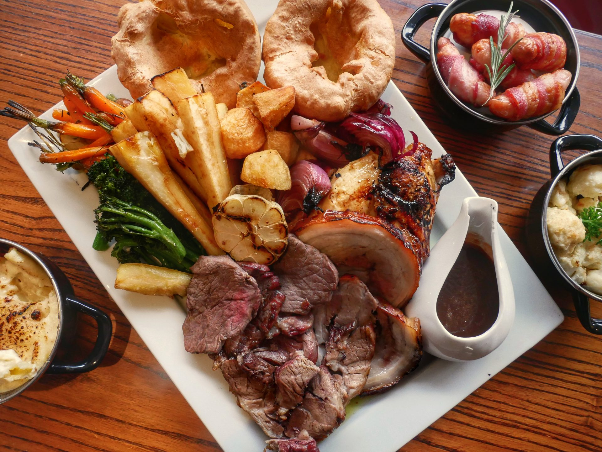
Toad in the Hole
Danie składające się z kiełbasy w cieście z puddingu Yorkshire połączonych z sosem gravy i warzywami. Mimo zawarcia w nazwie, danie nigdy nie było przyrządzanie z żaby. Historycznie, danie mogło być też przyrządzone z rumsztyku lub nerki jagnięcej.
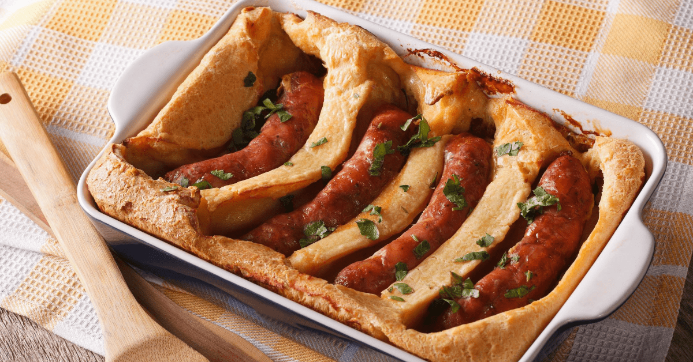
Shepherd's Pie i Cottage Pie
Bardzo podobne do siebie ciasta z jedną różnicą w postaci używanego mięsa: pierwsze używa jagnięciny, a drugie - wołowiny. Jednakże oba ciasta robi się z mielonego mięsa, warzyw (marchwi, pomidorów i cebuli) oraz puree z ziemniaków umieszczonych nad mięsnym wypełnieniem. Oba ciasta występują w różnych połączeniach składników w zależności od regionu i państwa, w którym je przyrządzono, prykładowo w Brazylii ziemniaki są zastąpione puree z manioka, a samo danie często zawiera też ser i mięso z kurczaka, dodatkowo czasami zamiast wołu używa się dorsza.
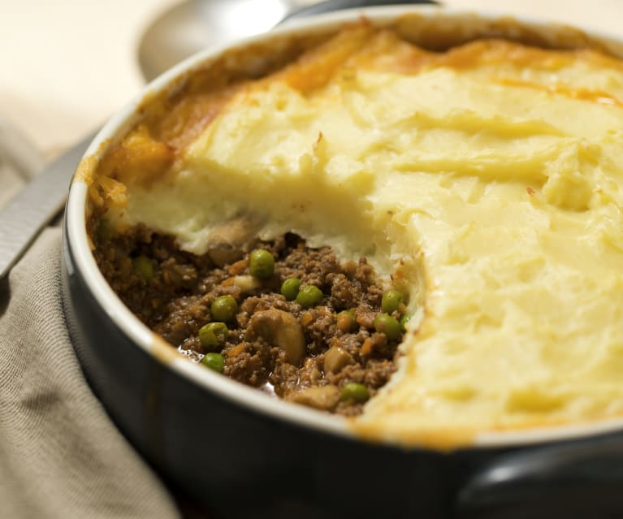
Steak and Kidney Pie
Wołowina, nerki, smażona cebula i sos gravy zawinięte w ciasto podane najczęściej z warzywami. Taka kombinacja daje nam ciasto będące czołowym przedstawicielem kuchnii brytyjskiej. W slangu na ciasto często używa się dziwacznych rymów do jego nazwy, np. Kate and Sidney pie, snake and kiddy pie, czy snake and pygmy pie.
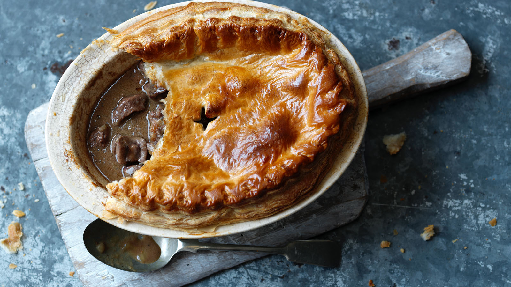
Potrawy walijskie:
Welsh rarebit
Danie brzmiące najprościej na świecie, gdyż jest to ser na toście. Jednakże kucharze z całego świata nie są zgodni co do sposobu przyrządzania, więc przepis jest dość ogólny. Najbardziej purystycznym podejściem jest użycie dojrzałego sera cheddar. Inne przepisy robią sos z połączenia sera, piwa ale i musztardy z dodatkiem papryki, jeszcze inne dodają wino lub sos Worcestershire. Sos można też zrobić poprzez zmieszanie seru i musztardy w sosie béchamel.
Glamorgan sausage
"kiełbasa serowa", stworzona jako wegetarianśka alternatywa do "bangerów" - ser Glamorgan zawinięty na kształt kiełbasy z nadzieniem w postaci pora, musztardy, przypraw i ziół oraz okruchów chleba. Na dzień dzisiejszy używa się sera Caerphilly, jako że ser Glamorgan nie jest już tworzony, a Caerphilly jest bezpośrednim potomkiem oryginalnego sera, posiadając bardzo podobny smak i konsystencję. Wiele przepisów też wymienia pora na cebulę i dodaje np. musztardę.
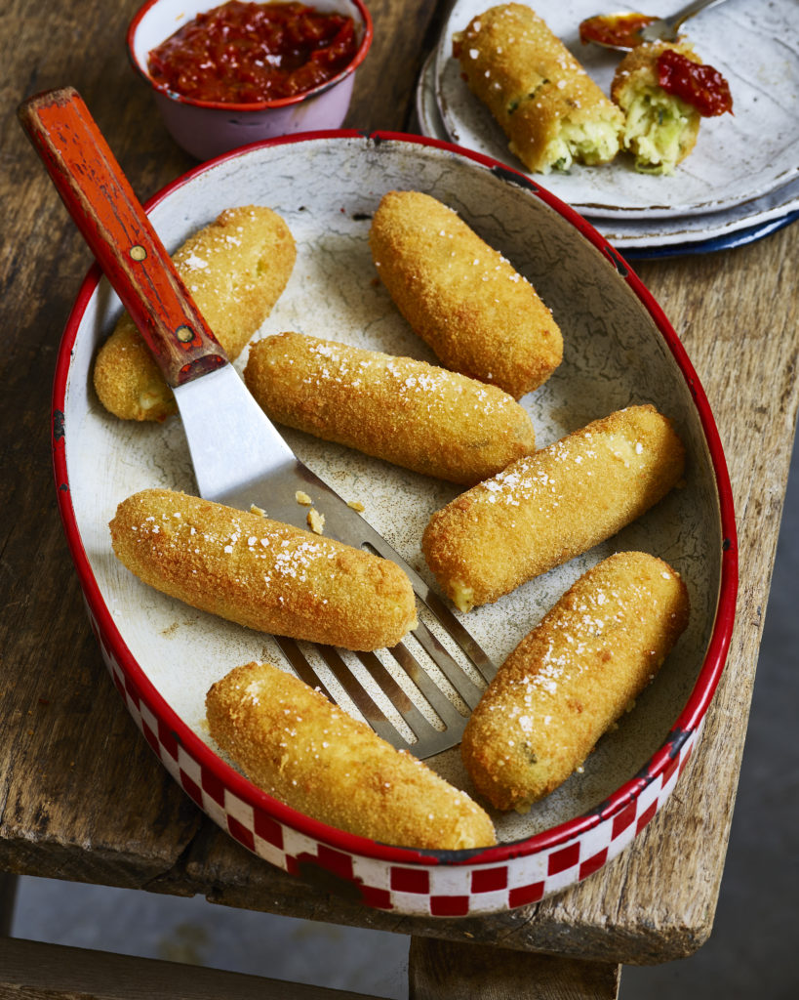
Bara brith
Tradycyjne ciasto owocowe z dodatkiem zimnej herbaty. Samo ciasto jest odmianą brytyjskiego chleba cherbacianego, który jest, tak samo jak odmiana walijska, ciastem owocowym zrobionym z herbatą. Samo ciasto jest standardowym połączeniem mąki, drożdzy, masła i jajka. Do tego dodaje się miks różnych wysuszonych owoców (np. rodzynki). Niektóre przepisy sugerują by owoce wcześniej moczyć w herbacie. Bara birth jest tradycyjnie serwowany w tzw. "tea time" razem z herbatą.
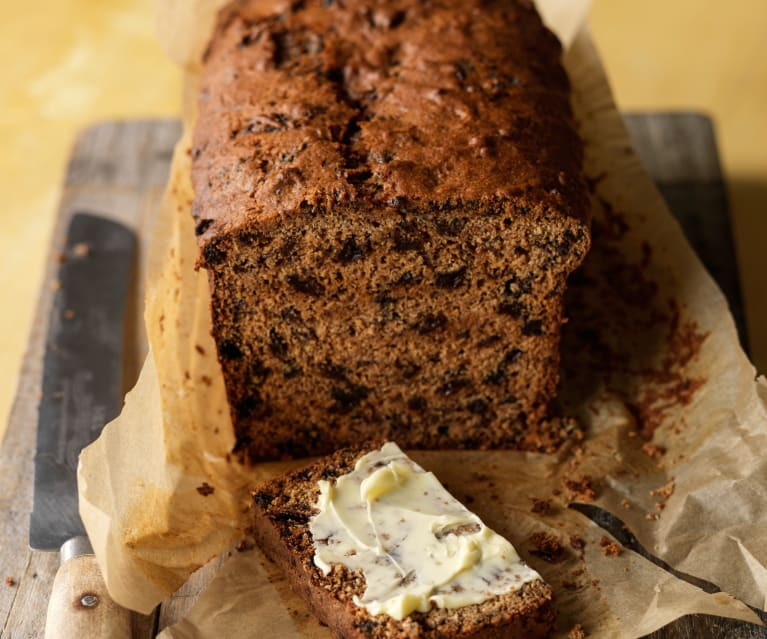
Lamb cawl
Wywar z wolno gotowanej jagnięciny z porem, możliwe są dodatki według własnego uznania. Sama nazwa cawl na dzień dzisiejszy oznacza zarówno zupę jak i rosół i jest uznawany za tradycyjne danie w Walii. Potrawa często jest serwowana wraz z chlebem i serem, wszystko serwowane na oddzielnych talerzach. Tradycyjnie, danie musi być przyrządzone w żelaznym kociołku nad otwartym ogniem i sporzyte przy użyciu drewnianych łyżek.
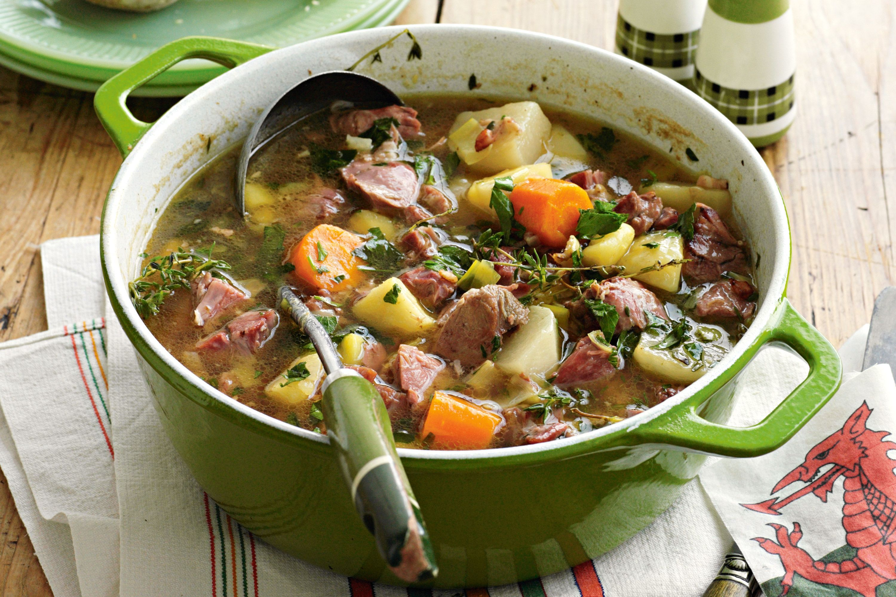
Conwy mussels
Bardziej ogólny zbiór dań z małży wyłowionych w wiosce rybackiej Conwy. Usytuowanie terenów, na których znajdują się małże daje im dodatkowy smak, który zapewnia popularność wśród koneserów owoców morza. Same małże nie są hodowane i rosną naturalnie, a ich połów odbywa się w tradycyjny, ręczny sposób w sezonie łowienia małży, trającym od 1 września do 30 kwietnia.
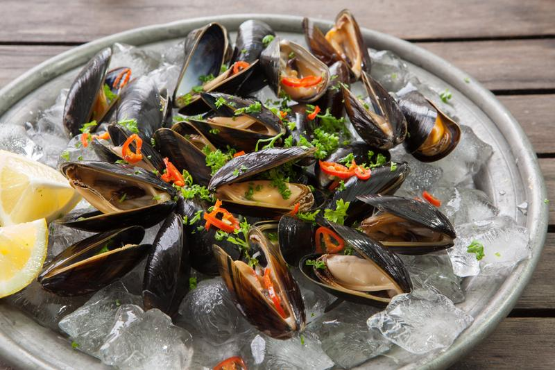
Crempogau
Tradycyjne walijskie placki, serwowane ciepłe, ułorzone w grupą stertę pokrytą masłem i czasem miodem. Składają się mąki, maślanki, jajek, octu winnego i solonego masła. Tradycyjnie są serwowane na uroczystościach, jak np. urodziny. Ciekawostka: liczba mnoga od crempog to crempogau.
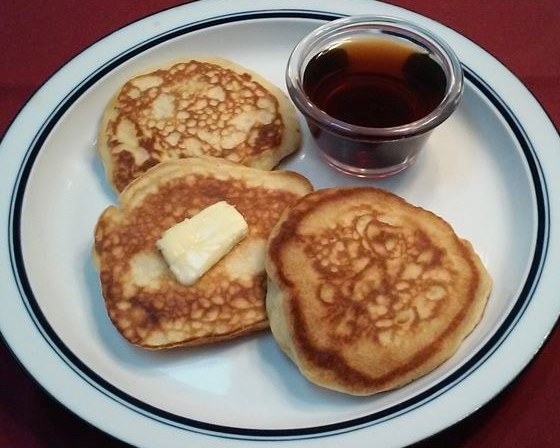
Potrawy szkockie:
Porridge (szkocka owsianka)
Gęsta szkocka owsianka jest ciepłym, łatwym do przyrządzenia, pożywnym i zapychającym śniadaniem.Owsianka najlepiej smakuje podana z mlekiem - chłodzi i rozrzedza. Sposób podawania owsianki zależy od indywidualnej wyobraźni i preferencji. Można ją podawać na słono lub słodko z owocami, warzywami, przyprawami, mięsem, miodem, lub zjeść bez dodatków.
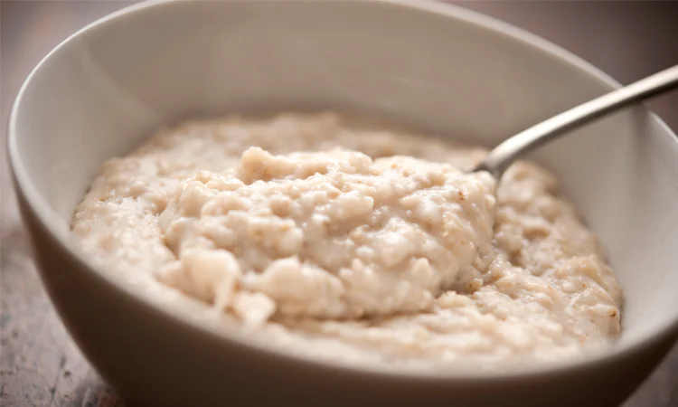
Scotch pie
Podwójnie zapiekane ciasto mięsne, najczęściej z mieloną baraniną. Samo ciasto często jest serwowane na meczach piłki nożnej, przez co potocznie też jest określane jako football pie. W Szkocji na te ciasta po prostu mówi się "pie". Od roku 1999 odbywają się coroczne mistrzostwa w robieniu Scotch pie.
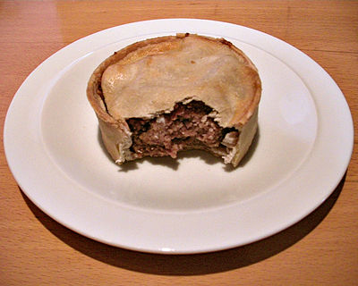
Cullen Skink
Zupa rybna robiona z wędzonego plamiaka (ryba), śmietanki, ziemniaków, i cebuli, serwowana często z dodatkiem chleba tostowego. Istnieje kilka regionalnych wariantów, gdzie wodę zastępuje się mlekiem bądź płynną śmietaną, ale tradycyjnie, autentyczny Cullen skink przyrządza się z finnan haddie, czyli plamiaka wędzonego na zimno metodą z północno-wschodniej Szkocji z użyciem świeżego drewna i torfu do produkcji dymu.
Deep-fried Mars Bars
Przekąska stworzona z batonika Mars ubitego wraz z miksem mąki jajek i mleka, potem usmożone na głębokim oleju. Wygląda niezbyt apetycznie, ale połądzenie jest całkiem smaczne, choć spożywanie dużych ilośći nie jest zalecane, z powodu kalorii zawartych w daniu.
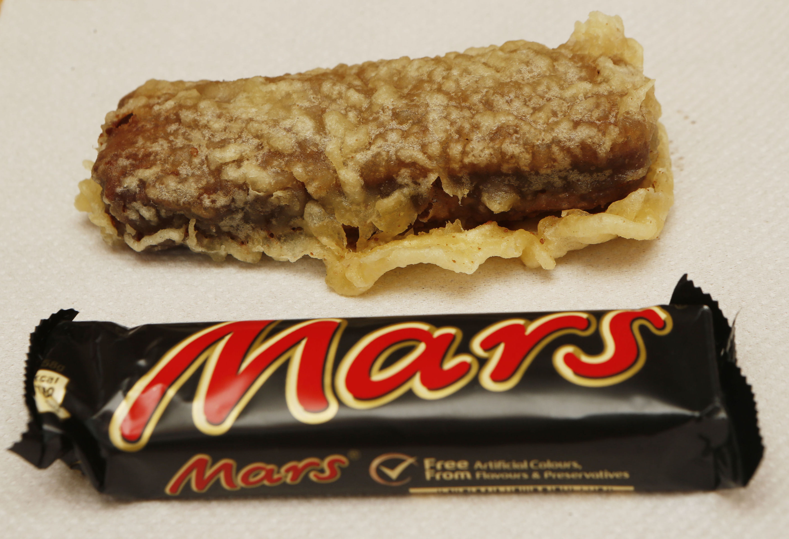
Haggis
Specjał szkockiej kuchni narodowej. Połączenie podrobów owcy z cebulą, owsianką, sadłem, suszonymi ziołami i innymi przyprawami, wszystko włożone w żołądek owcy i uduszone w nim. Najwyżej cenione Haggis są przyrządzane przez najstarszych przedstawicieli poszczególnych szkockich klanów, gdzie smak i aromat nadają zioła, których gatunki i proporcje są pilnie strzeżonymi tajemnicami. Jednakże można tej to tradycyjne danie kupić w supermarketach.
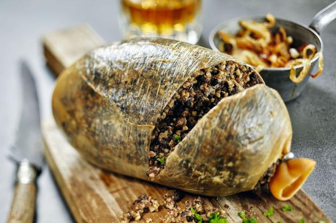
Neeps and Tatties
Warzywa korzeniowe ugotowane i ubite w dwie przystawki. Serwowane wraz z Haggisem tworzą całe danie o nazwie "Burns supper".
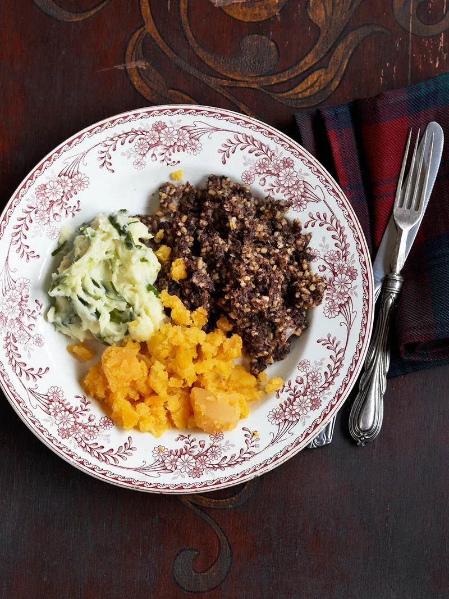
Cranachan
Tradycyjny szkocki deser z bitej śmietany, szkockiej whiskey, miodu, owsianki i świerzych malin. Oryginalnie był serwowany żeby uczcić zbiory, najczęściej bo zbiorze malin w czerwcu. Deser ten jest tak popularny, że został nazwany "niekwestionowanym królem szkockich deserów".
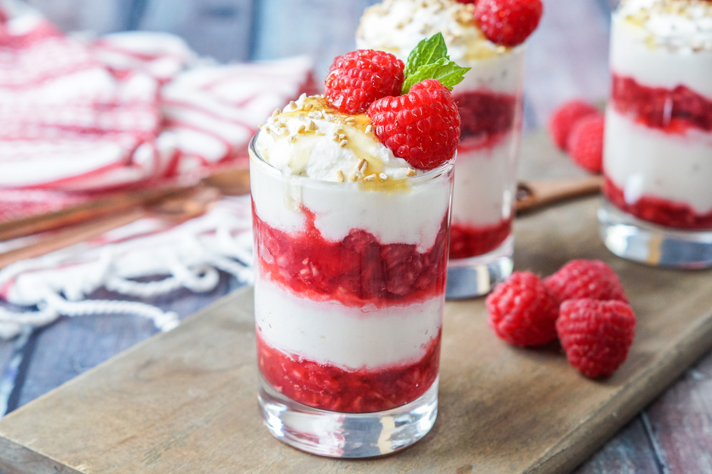
Stovies
Szkockie danie oparte na ziemniakach. Przepisy różnią się w zależności znacznie, ale niezmiannymi składnikami są ziemniaki, tłuszcz, zazwyczaj cebule i często kawałki mięsa. W różnych wersjach dodaję się także inne warzywa. Przyrządzenie potrawy wymaga wolnego gotowania ziemniaków z tłószczem w zamkniętym garnku, czasami z małymi ilościami wodu lub innego płynu, np. mleka. Stovies często jest serwowane wraz z zimnym mięsem lub plackami z mąki owsianej.
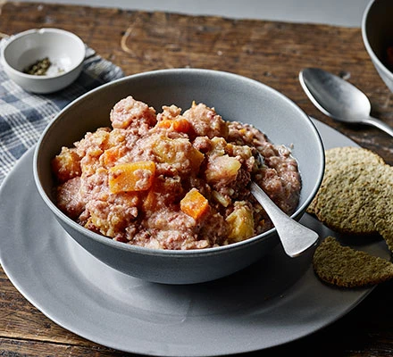
Zupa Cock-a-Leekie
Zupa z przyprawionego pieprzem wywaru z kury i porów, czasem suszonych śliwek. Może być zagęszczona przez dodanie ryżu bądź jęczmienia. Mimo statusu "Szkockiej zupy narodowej", przepis prawdopodobnie wywodzi się z francuskiej zupy z kurczaka i cebuli, natomiast gdy dotarła do Szkocji, cebulę zamieniono na pora.
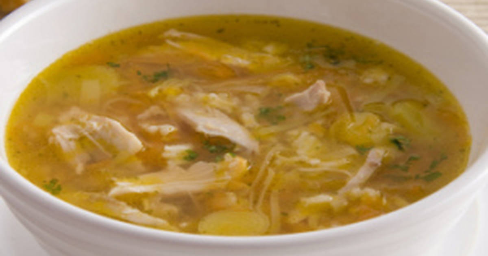
Potrawy z Irlandii Północnej:
Irlandzkie śniadanie
Pakiet śniadaniowy wywodzący się z Anglii, przystosowany do kultury Irlandii Północnej, choć niezbyt różniący się od oryginału. W skład wchodzą kiełbasa, bekon, czarny pudding, jajka, placki ziemniaczane, grzyby i fasola. Inną nazwą nadaną przez mieszkańców jest "Ulster Fry".
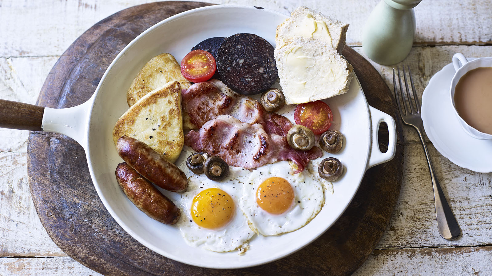
Soda bread
Chleb, gdzie drożdże zastąpiono proszkiem do pieczenia. Przy pieczeniu najczęściej wykorzystuje się mąkę gruboziarnistą białą, pełnoziarnistą, bądź połączenie obu, w zależności od przepisu. Maślanka lub kwaśne mleko są tradycyjnie używane jako płynny składnik, ze względu na reakcję z proszkiem do pieczenia.
Tradycyjny gulasz irlandzki
Zrobiony poprzez dodanie wołowiny lub jagnięciny i różnych warzyw korzeniowych, jak marchew czy ziemniaki, uduszonych razem w bulion. Sam przepis, jak to bywa z tradycyjnymi przepisami ludowymi, różni się w zależności od miajsca. Gulasz ten jest uważany za danie narodowe Irlandii.

Champ
Danie składające się z puree ziemniaczanego z szalotkami, masłem i mlekiem, czasami dodaje się pieprz i sól. Potrawa jest mocno związana z Samhain, celtyckim świętem obchodzone w noc 1 listopada, świętującym początek zimy. Według tradycji w niektórych regionach, oferowano porcję champa wróżkom poprzez zostawienie jej wraz z łyżką u podnóża głogu.
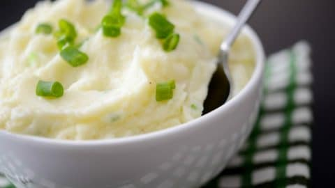
Barmbrack
Chleb z dodatkiem rodzynek i sułtanek podawany świerzy lub opieczony z masłem, w praktyce ciasto owocowe. Chleb ten w Irlandii mocno związany jest z Halloween, gdzie jekiś przedmiot (najczęściej pierścionek) jest wkładany do środka. Wierzy się, że ktokolwiek znajdzie ten przedmiot, będzie miał szczęście.
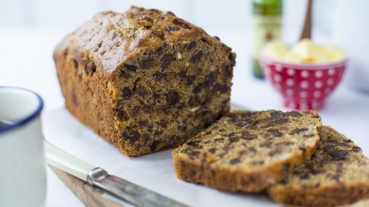
Pastie
Potrawa, będąca stosunkowo dużą porcją smażonego na głębokim oleju mielonego mięsa z warzywami, najczęściej podawane wraz z frytkami, tworząć "pastie supper" (w Irlandii Północnej w chip shoppach określenie "supper" oznacza coś z frytkami). Przepisy są różne, ale najczęściej spotykanym połączeniem składników jest mielona wieprzowina, cebula, ziemniaki i przyprawy uformowane w coś przypominające burgera, potem pokryte rzadkim ciastem i usmażone na głębokim oleju.
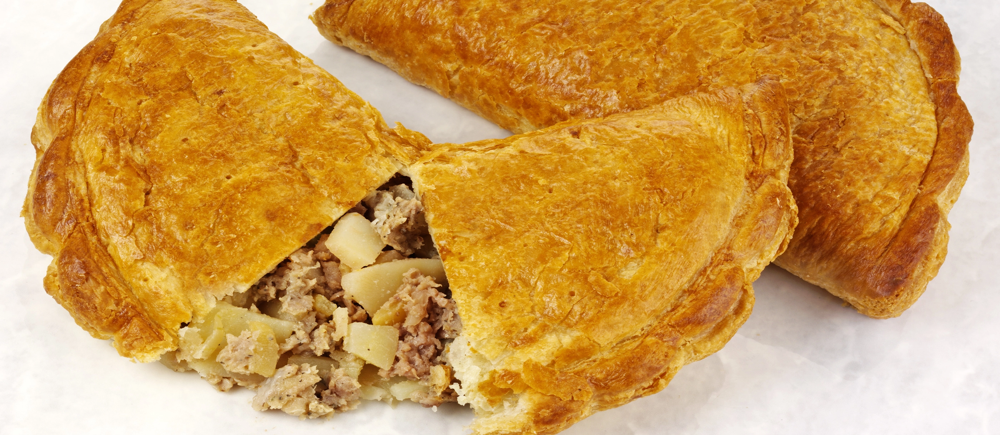